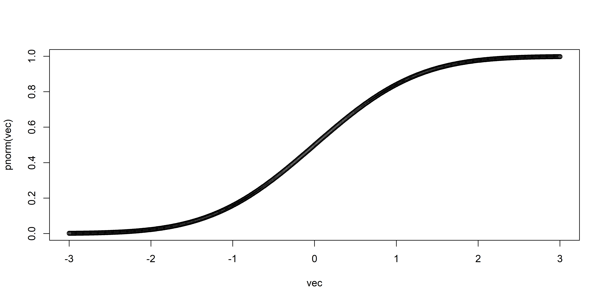
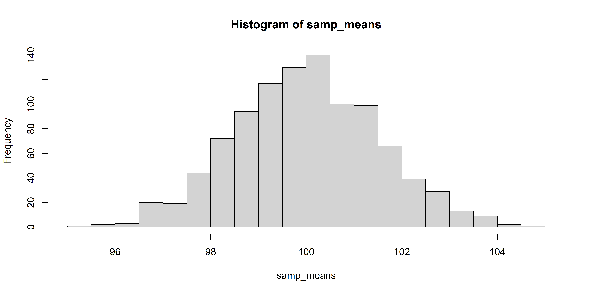
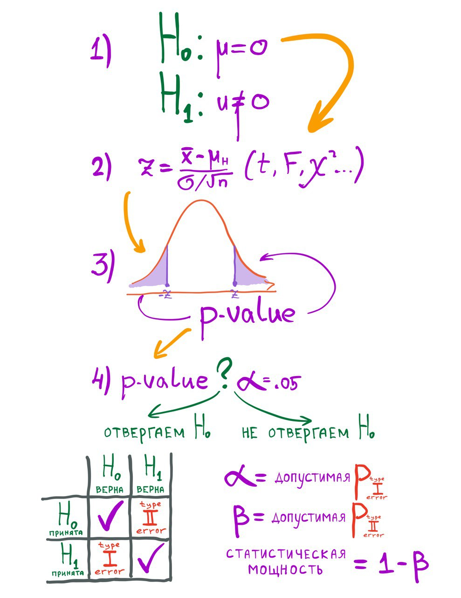

[1] 5.843333[1] 0.8280661Введение в статистику вывода: продолжение
Параметры и статистики.
Виды распределений: функции плотности вероятности (probability density/mass functions), кумулятивные функции распределения.
Стандартное нормальное распределение, центральная предельная теорема.
Стандартная ошибка и доверительный интервал.
Алгоритм статистического вывода на примере Z-теста.
Тест Стьюдента.
Population - генеральная совокупность.
Sample - выборка.
| Population | Parameter (обозначают греческими буквами: \(\mu\), \(\sigma\). |
| Sample | Statistics (обозначают например \(\overline{x}\), \(sd\)) |
Например, у стандартного нормального распределения среднее \(\mu\) 0 и стандартное отклонение \(\sigma\) 1, и эти значения являются параметрами, поскольку описывают теоретическое распределение (генеральную совокупность).
Например, в датасете iris среднее Sepal.Length равно 5.84, а стандартное отклонение 0.828, и эти значения являются статистиками (описывают выборку).
Можно посмотреть в cheatsheet по base R.
Наиболее полезные функции: density (d*()), cumulative distribution (p*()) и random (r*()).
Стандартное нормальное распределение имеет среднее 0 и стандартное отклонение 1. Важно отметить, что здесь мы говорим о параметрах генеральной совокупности, а не о статистиках.
dnorm()Забавный момент: для дискретных распределений называется probability mass function, для непрерывных - probability density function, на русский язык переводится одинаково: функция плотности вероятности.
Давайте отрисуем функцию плотности вероятности стандартного нормального распределения с помощью dnorm().
Шкала IQ отнормирована таким образом, чтобы среднее генеральной совокупности было равно 100, а стандартное отклонение 15.
pnorm() - кумулятивная функция распределения (cumulative density function)На примере стандартного нормального распределения.
pnorm() отражает вероятность получить такое же или меньшее значение в нормальном распределении (в данном случае в стандартном).
pnorm() - кумулятивная функция распределения (cumulative density function)На примере шкалы IQ.
Чему будет равно значение pnorm(100) для этой шкалы? То есть какая вероятность получить значение меньше чем 100?
Среднее равно 100, следовательно -> пояснение на графике
Чему равно значение pnorm(130) для шкалы IQ?
rnorm() - функция для генерации случайных значений из заданного распределения [1] 1.37095845 -0.56469817 0.36312841 0.63286260 0.40426832 -0.10612452
[7] 1.51152200 -0.09465904 2.01842371 -0.06271410 1.30486965 2.28664539
[13] -1.38886070 -0.27878877 -0.13332134 0.63595040 -0.28425292 -2.65645542
[19] -2.44046693 1.32011335 -0.30663859 -1.78130843 -0.17191736 1.21467470
[25] 1.89519346 -0.43046913 -0.25726938 -1.76316309 0.46009735 -0.63999488 [1] 0.45545012 0.70483734 1.03510352 -0.60892638 0.50495512 -1.71700868
[7] -0.78445901 -0.85090759 -2.41420765 0.03612261 0.20599860 -0.36105730
[13] 0.75816324 -0.72670483 -1.36828104 0.43281803 -0.81139318 1.44410126
[19] -0.43144620 0.65564788 0.32192527 -0.78383894 1.57572752 0.64289931
[25] 0.08976065 0.27655075 0.67928882 0.08983289 -2.99309008 0.28488295Сид нужно фиксировать каждый раз перед запуском чего-то зависящего от случайности.
set.seed(50) # для фиксации рандома
samp <- rnorm(100, mean = 100, sd = 15)
sqrt(sum((samp - mean(samp)) ^ 2) / (length(samp))) # совпадает ли с результатом функции sd?[1] 14.81449[1] 14.88912Почему не совпадает?
\[ sd = \sqrt{var} =\sqrt{\frac{\sum_{i=1}^n(x_i - \overline{x})^2}{n}} \]
Во встроенной функции sd(), которая опирается на функцию var(), в формуле n-1 в знаменателе.
\[ sd = \sqrt{var} =\sqrt{\frac{\sum_{i=1}^n(x_i - \overline{x})^2}{n - 1}} \]
Такая оценка стандартного отклонения называется несмещенной (unbiased) оценкой.
Почему n-1 в знаменателе -> объяснение на графике.
Мысленный эксперимент: многократно извлекаем выборки из генеральной совокупности, считаем средние по выборкам.
Распределение средних, извлеченных из нормального распределения, примерно нормальное. Это неудивительно, попробуем теперь в качестве генеральной совокупности использовать лог-нормальное распределение.
А вот распределение средних из изначально не-нормального распределение тоже похоже на нормальное распределение! Это получается благодаря центральной предельной теореме.
\[ \sigma_{\overline{x}}= \frac{\sigma} {\sqrt{n}} \]
Стандартное отклонение выборочного распределения средних называется еще стандартной ошибкой или standard error of the mean (s.e.m.). Нередко стандартную ошибку используют на графиках в качестве error bars.
Поскольку обычно мы не знаем истинное стандартное отклонение генеральной совокупности (\(\sigma\)), то используем стандартное отклонение выборки \(sd\).
\[ s_{\overline{x}}= \frac{sd} {\sqrt{n}} \]
Мы хотим поймать симметрично 95% от площади под кривой. Для этого нам нужно отбросить по 2.5% с обоих сторон. Эти 2.5% соответствуют примерно двум стандартным отклонениям от среднего. Если быть точнее, то 1.96. Если быть еще точнее:
Попробуем отрисовать доверительные интервалы:
library(tidyverse)
sample_size <- 100
set.seed(40)
ci_simulations <- tibble(
m = replicate(sample_size, mean(rnorm(sample_size, mean = 100, sd = 15))),
se = 15/sqrt(sample_size),
lower = m - se*zcr,
higher = m + se*zcr,
parameter_inside = lower<100 & higher>100
)
many_ci_gg <- ggplot(data = ci_simulations, aes(x = 1:sample_size,y = m)) +
geom_pointrange(aes(ymin = lower,ymax = higher,colour = parameter_inside))+
geom_hline(yintercept = 100)+
coord_flip() +
theme_minimal()Формулировка нулевой и альтернативной гипотезы.
Вычисление тестовых статистик.
Подсчет p-value как площади под кривой выборочного распределения тестовых статистик.
Вывод: отклоняем или не отклоняем нулевую гипотезу.
\(H_0\): \(m = \mu\) нулевая гипотеза, например, что среднее выборки статистически не отличается от среднего генеральной совокупности
\(H_1: m \neq \mu\) альтернативная гипотеза, о том что средние не равны
Формула z-скора
\[ z = \frac{m - \mu_{H_0}}{\sigma/\sqrt{N}}, \]
где m - среднее выборки, \(\mu_{H_0}\) - среднее генеральной совокупности, \(\sigma\) - стандартное отклонение генеральной совокупности, \(N\) - размер выборки.
pnorm() считает от минус бесконечности до заданного числа, а нам нужно наоборот — от заданного числа до плюс бесконечности, потому что \(z\) больше нуля. Этого можно добиться вычитанием из 1.
Поскольку мы не знаем в какую сторону у нас ожидается эффект, то нужно еще учесть симметричную площадь под кривой.
Много это или мало? Какой делаем вывод?
p-value > 0.05, порогового значения \(\alpha\), следовательно мы НЕ отклоняем нулевую гипотезу.
На практике z-тест не используется, потому что предполагает, что мы знаем стандартное отклонение в генеральной совокупности. Обычно это не так, поэтому мы оцениваем стандартное отклонение в генеральной совокупности на основе стандартного отклонения по выборке.
Это приводит к тому, что тестовая статистика уже не распределена нормально, а распределена согласно t-распределению. Статистика называется t-статистикой.
\[ t = \frac{\overline{x} - \mu} {s_x / \sqrt{N}} \]
Есть параметр степеней свободы: размер выборки -1
t-распределение имеет более тяжелые хвосты.
При размере выборке стремящемуся к бесконечности, t-распределение стремится к нормальному.
Формулировка нулевой и альтернативной гипотезы не изменилась.
Теперь в качестве тестовой статистики вычисляем t-статистику по формуле:
\[ t = \frac{\overline{x} - \mu} {s_x / \sqrt{N}} \]
Теперь вычисляем p-value как площадь под кривой распределения t-статистики. Для этого используем уже не pnorm(), а pt().
[1] 0.6222407[1] 0.3777593[1] 0.7555186
One Sample t-test
data: samp
t = 0.31224, df = 99, p-value = 0.7555
alternative hypothesis: true mean is not equal to 100
95 percent confidence interval:
97.38831 103.58714
sample estimates:
mean of x
100.4877 Картинка Ивана Позднякова с описанием этапов статистического вывода
Тест Стьюдента для сравнения двух выборок
wc3_units_armor <- wc3_units %>%
filter(armor_type == 'Heavy' | armor_type == 'Light')
t.test(wc3_units_armor$hp ~ wc3_units_armor$armor_type)
Welch Two Sample t-test
data: wc3_units_armor$hp by wc3_units_armor$armor_type
t = -2.3602, df = 21.493, p-value = 0.02778
alternative hypothesis: true difference in means between group Heavy and group Light is not equal to 0
95 percent confidence interval:
-536.65167 -34.28877
sample estimates:
mean in group Heavy mean in group Light
533.6207 819.0909 Можно в функцию t.test() подавать два вектора:
Welch Two Sample t-test
data: seq(1, 10, 0.1) and seq(5, 12, 0.2)
t = -6.7082, df = 80.014, p-value = 2.564e-09
alternative hypothesis: true difference in means is not equal to 0
95 percent confidence interval:
-3.889981 -2.110019
sample estimates:
mean of x mean of y
5.5 8.5 На самом деле по умолчанию в R запускается тест Велча, поскольку предполагается, что дисперсии двух выборок не равны
Формула теста Стьюдента:
\[ t = \frac{\overline{X_1}-\overline{X_2}}{s_x\sqrt{\frac{1}{n_1} + \frac{1}{n_2}}}, s_x = \sqrt{\frac{(n_1 - 1)s_1^2 + (n_2 - 1)s_2^2}{n_1 + n_2 - 2}} \]
Чтобы запустить именно тест Стьюдента, можно использовать аргумент var.equal = TRUE
Two Sample t-test
data: wc3_units_armor$hp by wc3_units_armor$armor_type
t = -2.1765, df = 38, p-value = 0.0358
alternative hypothesis: true difference in means between group Heavy and group Light is not equal to 0
95 percent confidence interval:
-550.98551 -19.95493
sample estimates:
mean in group Heavy mean in group Light
533.6207 819.0909 Однако это делать не рекомендуется, поскольку при равных дисперсиях тест Стьюдента не будет сильно отличаться от теста Велча, а при разных тест Велча точнее.
Формула теста Велча:
\[ t = \frac{\overline{X}_1 - \overline{X}_2}{\sqrt{\frac{s_1^2}{n_1} + \frac{s_2^2}{n_2}}} \]
Количество степеней свободы:
\[ df = \frac{(s_1^2/n_1 + s_2^2 / n_2)^2}{(s_1^2/n_1)^2/(n_1-1) + (s_2^2/n_2)^2/(n_2-1)} \]
По умолчанию рекомендуется использовать тест Велча.